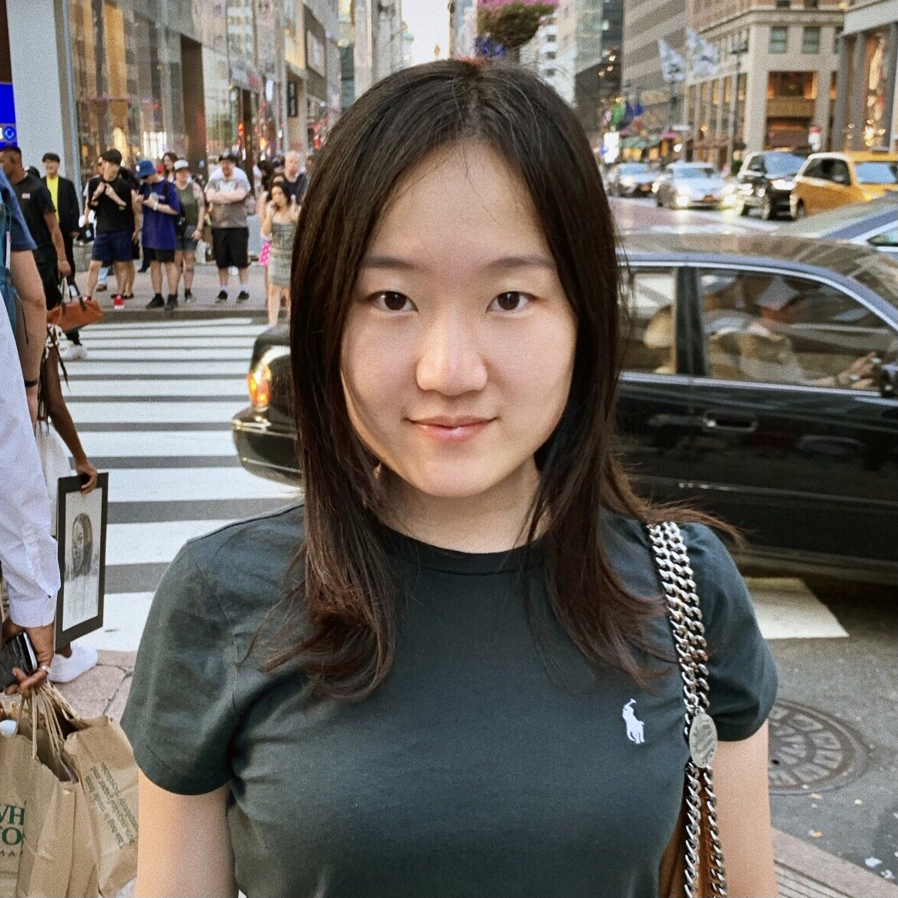
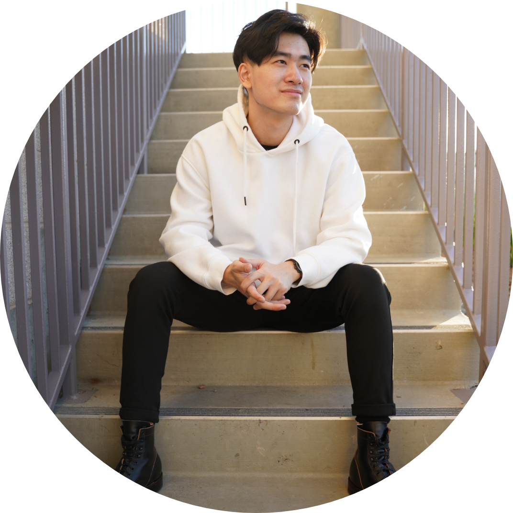
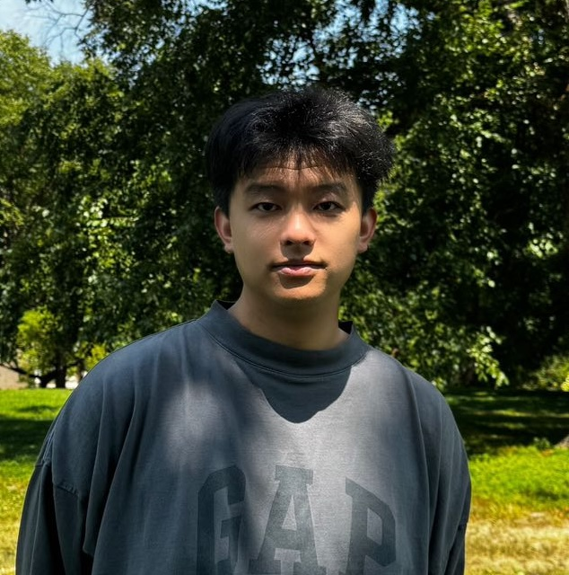
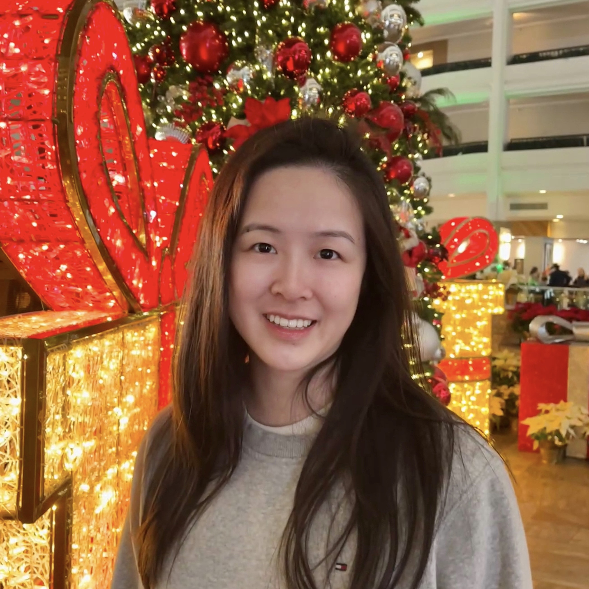
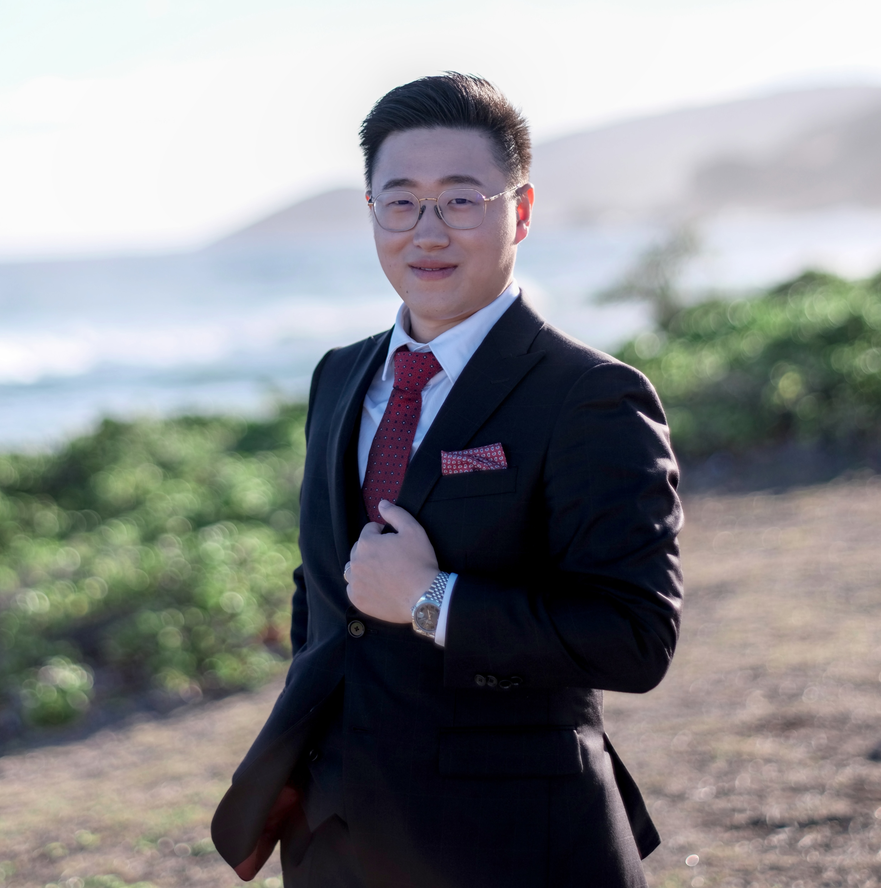
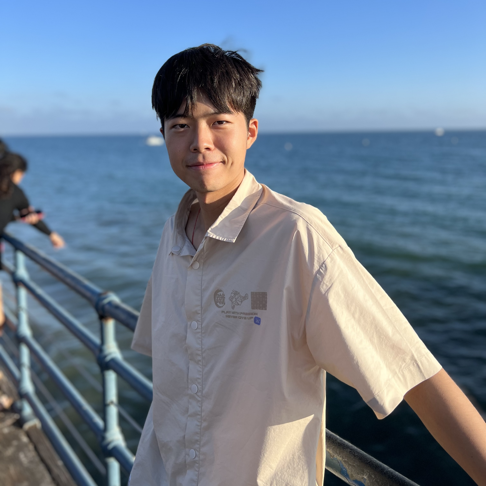

Meiyi Ma
Assistant Professor Computer Science Vanderbilt University Office: 401E, 1025 16th Ave S, Nashville, TN 37212 Email: meiyi.ma AT vanderbilt.edu
Ph.D. Students:

Ziyan An (Summer 2022 - Now)
Ziyan An is a fourth-year Ph.D. student in the Department of Computer Science at Vanderbilt University. Her primary research interests include explainable AI, cyber-physical systems, formal methods, and logic-guided AI. Before joining Vanderbilt, she received her B.S. in Computer Science from New York University.

Hanchen (David) Wang (Fall 2021 - Now)
David Wang is a Ph.D. student in the Department of Computer Science at Vanderbilt University. His primary research interests include verifiable AI, Cyber-Physical Systems, HCI, and Human Activity Recognition in Physical Therapy. Before joining Vanderbilt, he received his B.S. in Computer Science from UC Irvine.

Zirong Chen (Fall 2021 - Now)
Zirong Chen is a PhD student in Computer Science at Vanderbilt University. His research interests include establishing safe AI systems for Cyber Physical Systems and developing NLP and online learning methods for smart cities.

Guocheng He (Fall 2024 - Now)
Guocheng He is a PhD student in Computer Science at Vanderbilt University.

Yuefan (Yvonne) Zhou (Summer 2025 - Now)
Yvonne Zhou is a Ph.D. student in the Department of Computer Science at Vanderbilt University. Before joining Vanderbilt, she received her B.A. in Data Science from the University of California, Berkeley, and her M.S. in Information Management from the University of Illinois Urbana-Champaign.
Soyon Choi (Fall 2025 - Now)
Soyon Choi is a Ph.D. student in the Department of Computer Science at Vanderbilt University. Her primary research interests include adversarial learning, trustworthy AI, and theoretical approaches to machine learning interpretability. Before joining Vanderbilt, she received her B.A. in Computer Science and Mathematics from Amherst College.

Postdoc:

Hongchao Zhang (Fall 2025 - Now)
Hongchao Zhang is a Postdoctoral Scholar in the Department of Computer Science at Vanderbilt University, working with Prof. Taylor T. Johnson, Prof. Meiyi Ma, and Prof. Ahmad F. Taha. His research advances trustworthy AI-enabled cyber-physical systems by integrating control theory, formal methods, and security to provide end-to-end safety assurance from algorithm design to deployment.
MS RA:
Lingwen Deng (Fall 2024 - Now)
Lingwen Deng is a master’s student in Computer Science at Vanderbilt University. Her research interests include Cyber-Physical Systems and Explainable AI. Before joining Vanderbilt, she received her B.A. in Computer Science from Boston University.
Undergraduate RA:

Bingsong Liu (Fall 2024 - Now)
Bingsong Liu is an undergraduate student in Computer Science at Vanderbilt University.
Jackson La Vallee (Fall 2024 - Now)
Jackson La Vallee is an undergraduate student in Computer Science at Vanderbilt University.